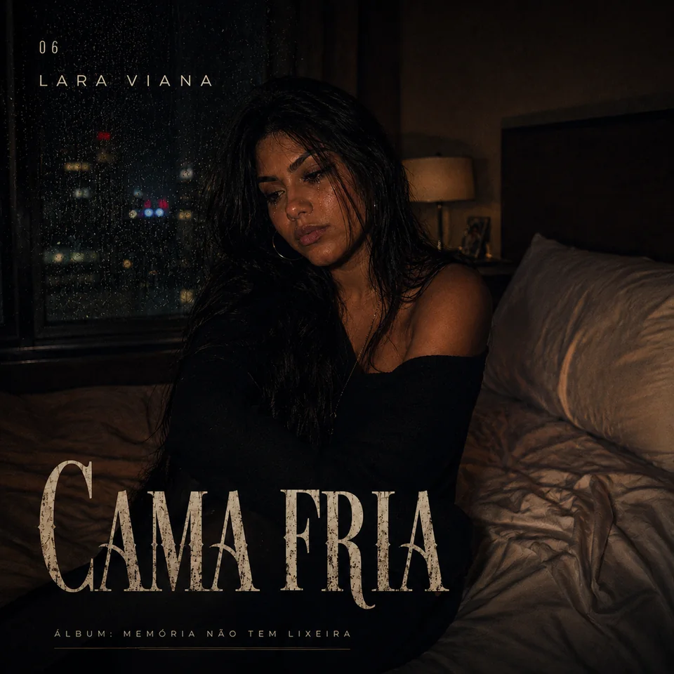

“Você veio por uma música. Talvez descubra muitas outras histórias — e as pessoas e projetos que estão por trás delas.”
Uma porta de entrada para o Universo DELTΔ, criado no Brasil.

Às vezes, o lado mais frio da cama não é o que ficou vazio. É aquele onde a saudade insiste em dormir. Se essa história parece sua, talvez você tenha encontrado sua próxima música favorita.
Letra de Joaldo Soares da Silva • Lara Viana é artista virtual • Produção musical com auxílio do Suno Pro.
“Você veio por uma música. Talvez descubra muitas outras histórias — e as pessoas e projetos que estão por trás delas.”
Uma porta de entrada para o Universo DELTΔ, criado no Brasil.
A Lara canta a saudade com voz virtual, sofrência e breganejo. Tem amor que termina — e tem refrão que continua com a gente.
O adeus aconteceu. O sentimento ainda não recebeu o aviso.
▶ Escutar agora ↗ A memóriaMemória Não Tem LixeiraVocê apaga uma mensagem, mas não apaga o que sentiu.
▶ Escutar agora ↗ Catálogo ampliadoDescubra a Lara na DeMuMais músicas e diferentes fases da mesma artista, em nossa plataforma musical.
♫ Explorar catálogo ↗A DeMu também reúne artistas e estilos que vão muito além da sofrência. Descubra o que mais nasce no DELTΔ MUSIC GROUP.
Para quem gosta de intensidade, personalidade e novas sonoridades.
♫ Conhecer Zaya ↗ Piseiro • festa • energiaMaloka do PiseiroSe a saudade já passou, talvez seja hora de levantar e dançar.
♫ Conhecer Maloka ↗ Nossa plataforma de músicaDeMu — Delta MusicUm espaço independente para ouvir e explorar nosso catálogo artístico.
♫ Entrar na DeMu ↗Música, inteligência artificial e software fazem parte do mesmo laboratório criativo. Estes são alguns projetos do ecossistema, em diferentes estágios de desenvolvimento.
Gestão inteligente para provedores de internet.
Ferramentas de manutenção, proteção e gestão de computadores.
Software de ponto de venda e gestão para comércio.
Projetos de vitrines digitais, conteúdo e descoberta de produtos.
Para conhecer produtos e serviços, acompanhe os anúncios oficiais de cada projeto. Não é necessário criar conta para explorar esta página.
Compartilhe uma música com alguém. É assim que histórias novas encontram outras pessoas.
O DELTΔ MUSIC GROUP avalia colaborações com cantores, músicos, produtores e empresas. Se você quer interpretar uma composição, participar de uma gravação ou propor uso comercial de uma música, entre em contato com nossa equipe. Cada projeto é avaliado individualmente, com direitos, créditos e orçamento combinados antes da produção.
Regravações, gravações com músicos reais, trilhas para projetos e propostas de sincronização. O envio da mensagem não concede licença nem estabelece contratação.
Contato editorial: laraviana@deltamusic.com.br. Não envie documentos sensíveis ou gravações inéditas sem acordo prévio.